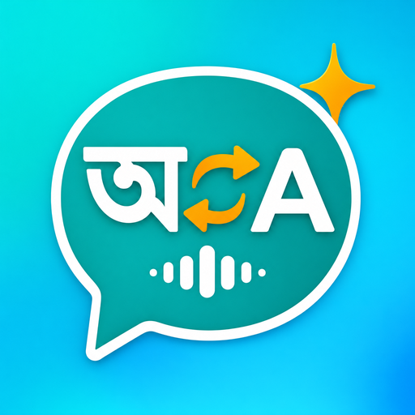
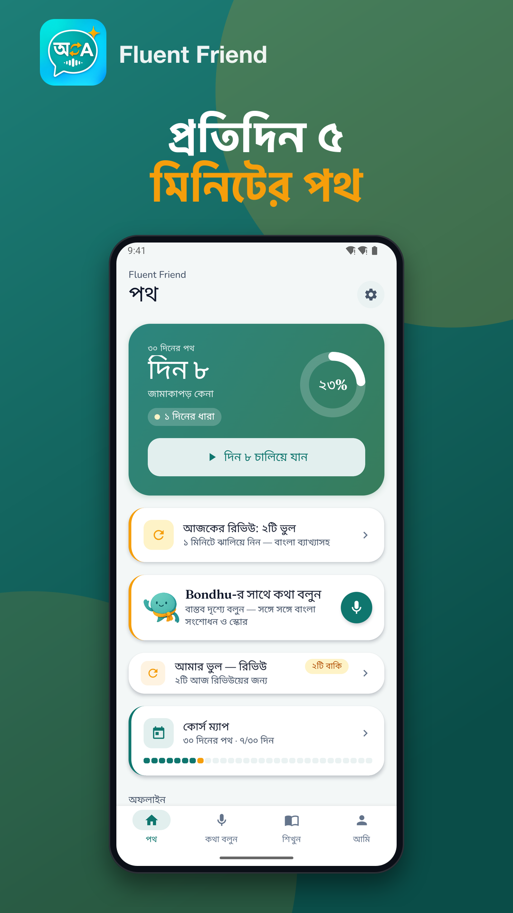
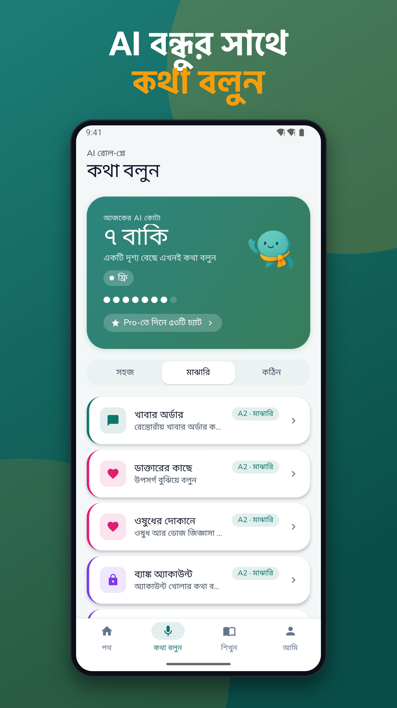
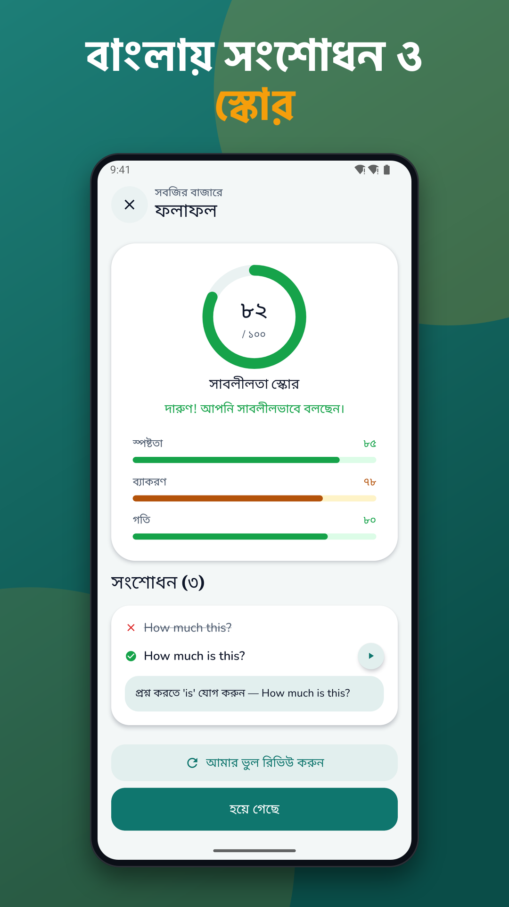
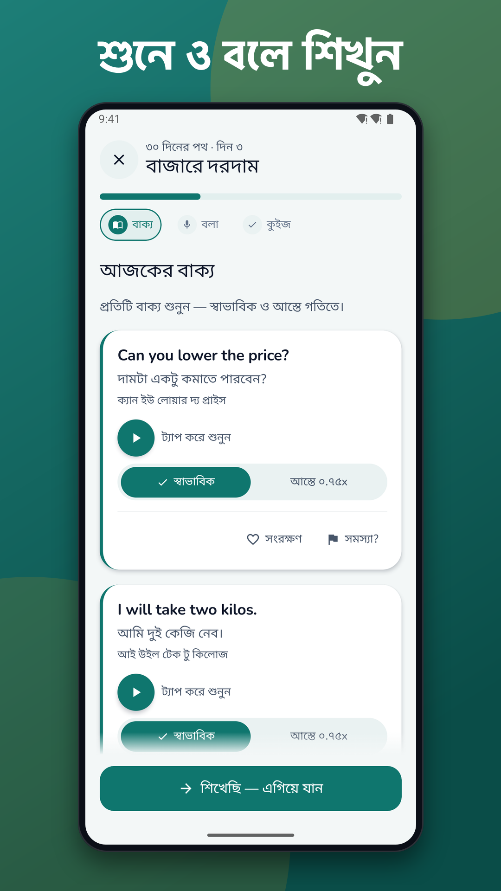
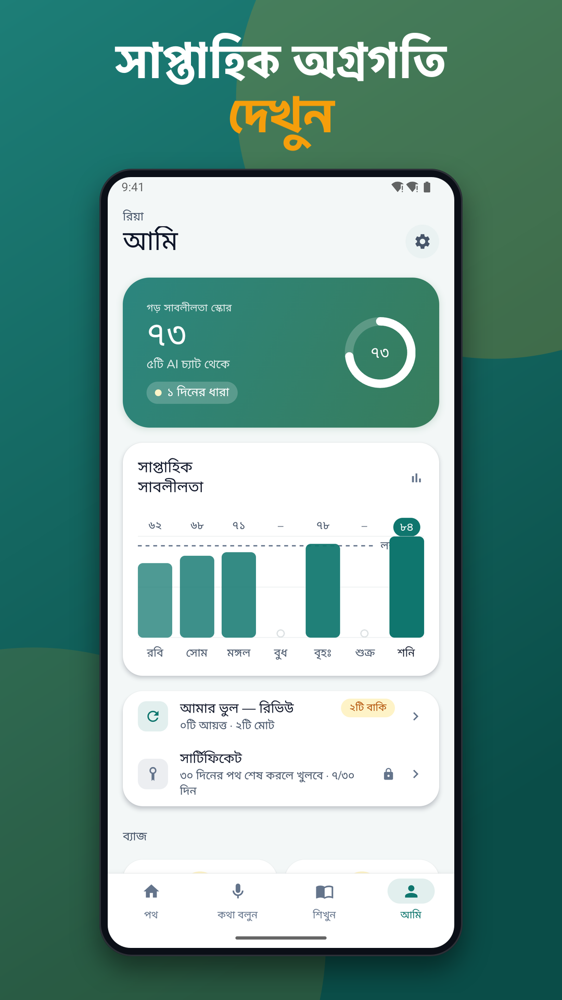
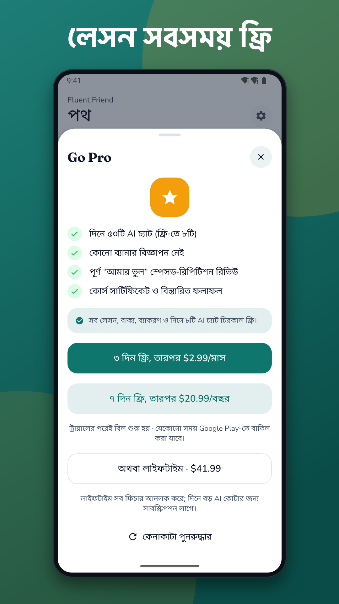

Fluent Friend: Bengali English
Bengali to English speaking practice with AI voice chat and Bangla tips






Bengali to English speaking made simple: Fluent Friend is a calm, Bangla-first tutor that helps you actually say English out loud, not just read it. Learn in short daily sessions, with every explanation in plain Bangla.
If you have searched for a spoken english bangla course and found only pages of static text, this is different. You listen, you speak, and you get gentle corrections.
SPEAK FROM DAY ONE
• Open the app and start lesson 1 right away, with no account needed
• Hear each English phrase with its Bangla meaning and Bangla-script pronunciation
• Tap for slow audio when the English feels too fast
• Repeat-after-me exercises that highlight words to improve, with a short Bangla tip
• Your speech is turned into text by Android's speech recognizer on your device
AI CONVERSATION PRACTICE
Practise Bengali to English speaking in real-life situations such as introductions, shopping, a bank visit, a doctor visit, a job interview, travel and phone calls.
• Talk with an AI partner that replies in short, simple English
• Get corrections explained in Bangla, with a better sentence to try
• See a fluency score after each chat
• Use hint chips when you freeze and don't know what to say
• AI features need an internet connection. The text of what you say is sent to our server for analysis, and a Report option sits on every AI response.
LEARN STEP BY STEP
• Guided 7-day and 30-day paths of about 5 minutes a day
• Quick quizzes after lessons, with a Bangla reason for wrong answers
• Topic phrasebooks for daily life, jobs, shopping and travel, plus search and favorites
• Simple grammar cards in easy Bangla
• Daily streak and progress so you can see your spoken english in bengali improve
• A My Mistakes list that brings back the things you got wrong
REMINDERS
Choose one daily reminder time that suits you, and turn it off any time in Settings. With your permission, the app may also receive notifications from us.
FREE AND PRO
Free: the lessons, quizzes, phrasebook, grammar and a daily AI speaking allowance. The free version shows ads; rewarded videos are optional.
Pro: removes ads and adds more AI practice time. Prices and billing period are shown in the store before you buy, you can cancel in your store subscription settings, and Restore Purchases is available.
PRIVACY
You can use the app without an account, and your lesson progress stays on your device. Signing in with an email code is optional and enables cloud backup. The app collects anonymous, minimal usage analytics to improve it, and ad services may use device identifiers according to your consent choices. You can delete your account and data in Settings.
Whether you want English for a job, study or everyday life, this english speaking practice bengali learners can do in minutes a day is built to make you more confident. Download Fluent Friend and say your first English sentence today. It is a learning tool and does not guarantee any exam or job result.
Support: jeets98e@gmail.com